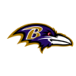

Week 11 picks, best bets: Lowly Jets send Chargers back into loss column, Titans cover vs. Cowboys
Tyler Sullivan picks every game on the Week 11 schedule, including five locks against the spread

AFC West · American Football Conference · 40 headlines in the last 30 days

Chargers vs. RavensTyler Sullivan picks every game on the Week 11 schedule, including five locks against the spread

The NFL has flexed the Raiders-Browns Week 12 game into NBC's "Sunday Night Football" slot.

No. 1 overall pick Fernando Mendoza will lead Las Vegas vs. a hopeful Cleveland side.

Patriots at Chargers is moving out of prime time

Justin Herbert finally had a reason to celebrate Monday night. Instead, a subdued-looking postgame high-five with Jim Harbaugh became fuel for speculation that the Chargers quarterback may be fed up...

The Chargers-Patriots Sunday Night Football matchup in Week 12 has been flexed out of primetime.

Kickoff at SoFi Stadium was previously set for 8:20 p.m. ET.

Plus, we've got expert picks for a loaded slate of college basketball games

The Chargers' defense stifles Baltimore's running backs, and Justin Herbert steps up in Los Angeles' first win.

Pro Bowl safety Kyle Hamilton vented after the Ravens' 23-20 loss to the previously winless Chargers on Monday night, which was one of the most embarrassing defeats in team history.

Jets quarterback Geno Smith went for tests on his injured ankle on Monday, but it doesn't look like they turned up anything that will keep him from playing against the Chargers in Week 11.

The Chargers have their first win. The Titans now have the first pick

Before the season, many expected the Chargers not only to get back to the playoffs for the third straight year but to finally make some noise.
The Los Angeles Chargers are turning the page to their next game against the New York Jets.
The Chargers beat the Ravens 23-30 on Monday night to earn their first win since Week 16 of last season, bringing a franchise-wide sigh of relief.
The Los Angeles Chargers secured their first win of the season on "Monday Night Football," and have another chance at success on a short week.
The Chargers not only picked up their first win of the season, they did it on Monday Night Football.
The Ravens gifted the Chargers with their first win of the 2026 season.
Justin Herbert helped the Los Angeles Chargers earn their first win of 2026, and dealt the Baltimore Ravens' flickering playoff hopes a fatal blow.

Justin Herbert and Omarion Hampton have touchdown runs for the winless Chargers.

Justin Herbert's left hand seems just fine.

Come chat with Bills Mafia at Buffalo Rumblings as Week 10 of Monday Night Football unfolds LIVE!

New Kalshi users can get a $55 bonus after making $25+ in trades on the NFL Week 10 Chargers vs. Ravens MNF matchup

DraftKings offers $200 in bonus bets and three free months of NBA League Pass after your first $5 wager for Ravens vs. Chargers on Monday Night Football

Join us live to follow and discuss this evening’s MNF game between the Baltimore Ravens and the Los Angeles Chargers.

Best bets and betting preview for Chargers vs. Ravens on Monday Night Football

The Los Angeles Chargers are sitting a handful of players ahead of their Week 10 matchup against the Baltimore Ravens.

The Ravens will look to secure a win in their first game with Jacoby Brissett as starting quarterback.

Here are our top picks for first touchdown prediction markets on Monday Night Football between the Chargers and Ravens to end Week 10

Sign up with the latest FanDuel promo code and wager on Monday to get your bonus bets

Top Week 10 NFL betting apps include DraftKings, FanDuel, BetMGM, bet365, Caesars, Fanatics Sportsbook and Hard Rock Bet

Find best bets and props for the biggest games in sports on Monday from the SportsLine Projection Model and top CBS Sports experts

Here are our top picks for first touchdown prediction markets on Monday Night Football between the Chargers and Ravens to end Week 10

Plus, how to watch, odds, a preview and a prediction for the Monday night matchup

The Broncos coach rejected Harbaugh's criticism of the process that derailed Denver's trade for Chargers linebacker Daiyan Henley

Here's everything you need to know about the NFL for Nov. 16
New Kalshi users can get a $55 bonus after making $25+ in trades on Monday Night Football betwen the Chargers and Ravens

Use the latest MGM promo code CBSSPORTS to get $1,500 in bonus bets if your first bet loses for Ravens vs. Chargers on Monday Night Football

CBS Sports NFL expert Will Brinson shares his top picks and props for Monday Night Football in NFL Week 10
Sign up with the latest FanDuel promo code and wager on Monday to get your bonus bets